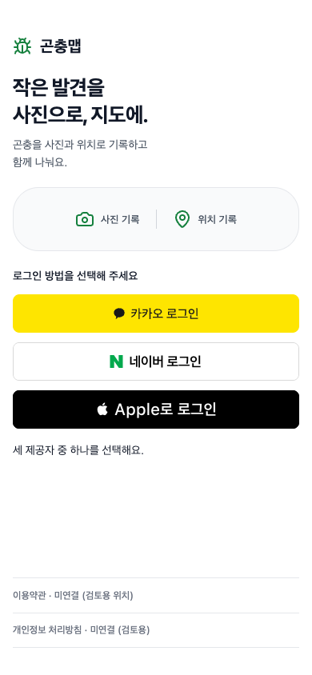
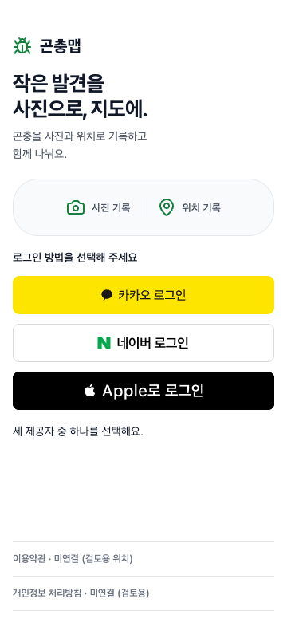

사람 승인 전 · 새 비교안
곤충맵 로그인
승인된 정보 순서와 복구 흐름에 공식 브랜드 자산·색·서체를 적용했습니다. 기존 원격 프레임은 변경하지 않았습니다.
컴포넌트 보드생성된 DESIGN.md검수·출처·한계대표 기본 화면
390×844

360×800

상태 비교


unsupportedHTML 미리보기390 캡처360 캡처


이 인증 브라우저가 실제 지원정보에서 미지원으로 확인된 경우를 가정한 Apple 예시입니다. OS 자체의 미지원 판단이 아닙니다.


실제 인증·정책 문서·Figma·스크린리더·기기 접근성은 후속 검증 대상입니다.